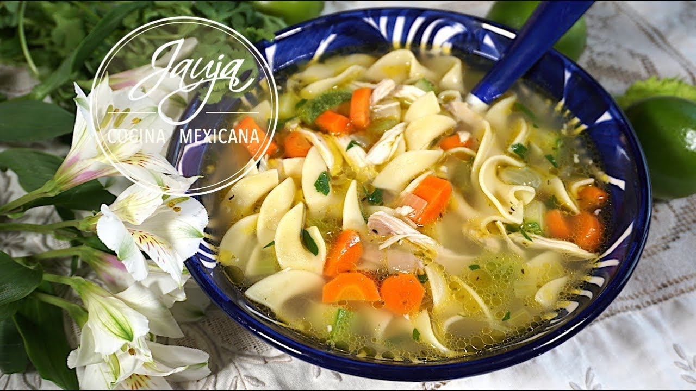

Go Back
Chicken Noodle Soup

A juicy Chicken Noodle Soup to warm the soul on cold days.
This Chicken Noodle Soup is a unique twist
packed full of flavor. It cobmines a mix of
hearty herbs and spices with juicy tender chicken.
This recipe is brought to you by Jauja Cocina Mexicana,
a Mexican food content creator on youtube.
Ingredients
- 5 Skinless Chicken Thighs
- 2 celery sticks
- One small white onion
- One young turnip
- 4 garlic cloves
- Fresh parsley
- Salt to taste
- 3 Bay leaves
- Tsp of Thyme
- 1/2 an onion diced
- 1/2 cup of diced celery
- 1/2 cup of diced carrots
- 2 tbsp minced garlic
- Egg white noodles
Steps
- Fill a large pot with 4L of water.
- Add Chicken thighs and salt.
- Add your onion, garlics, celery, parsley, 2 bay leaves, and thyme.
- Bring the water to a boil and place a lid on top,
reduce heat to medium and leave it for 20 mins.
- Remove Chicken from stock and allow to cool before shredding.
- In a new pan fry the diced ingredients along with your last bay leaf and minced garlic. Only fry for about 3 minutes.
- Drain the stock we had previously made into our new pot; bring to a boil.
- Add your squash, noodles, and salt to taste.
- After 10 minutes add your chicken.
- The dish is ready to serve and enjoy. Feel free to garnish with chopped parsley.